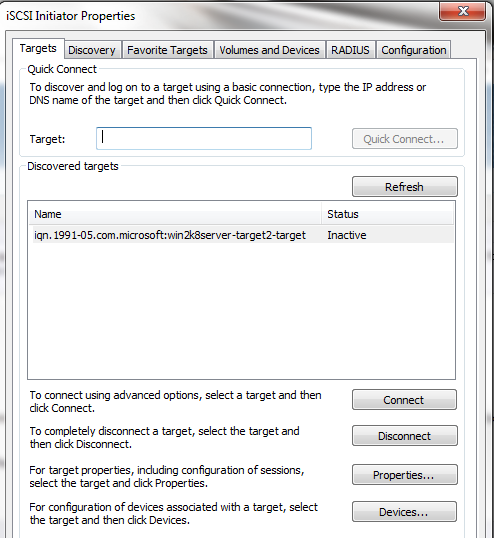

Installation
The Microsoft iSCSI initiator actually has many more features than will be shown here, but this series is meant to be a basic guide to getting Microsoft iSCSI targets and initiators set up.
Run the Microsoft iSCSI software and allow access via UAC. If Quick Connect doesn't work, go to the Discovery tab and make sure that the iSCSI Target Server is on the target portals list.
Once it is, you should see the IQN of the iSCSI target listed on the Targets tab. (may need to refresh list, > 5 min delay)

{kind=link}
Next, Connect to the correct IQN of the iSCSI Target. In typical storage implementations one will see this list have lots of IQNs listed, making it all the more important to use descriptive names.
{kind=link}
After clicking OK, should see on the Targets tab that everything is connected.
Once connected, go to the Volumes and Devices tab and select Auto Configure.
Once done, go into Windows Disk Management and see the volume attached as one would if a drive was directly connected into the machine. Congrats, you can use the device as though it is a standard drive.
{kind=link}
the Microsoft iSCSI Software Target is installed under Admin Tools.
Setup
Create a Target. Enter the wizard

Supply an iSCSI target name and description. helps keep things clear. After this, set the IQN.

We now need to point the target to a disk. For this, create a new virtual disk (or import one).

New wizard. Define a path. browse to the path on the host system and then type the name in a "name.vhd" format. Then, assign a size to the vhd.

with a target and virtual disk : need to link the two. In access screen, click add and then link the VHD and iSCI target.